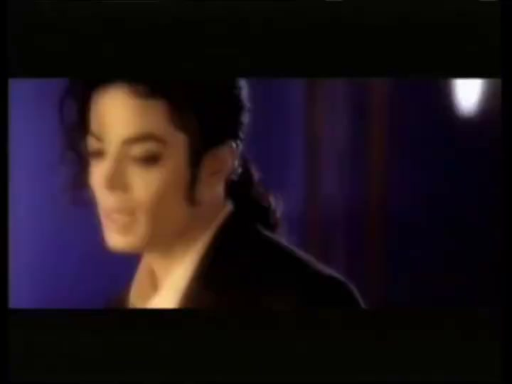
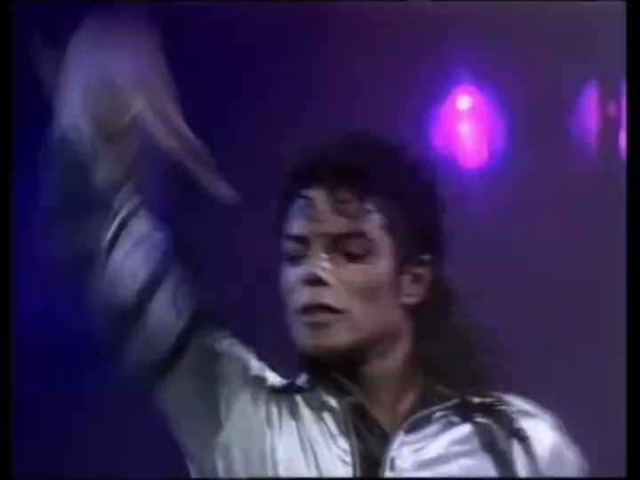
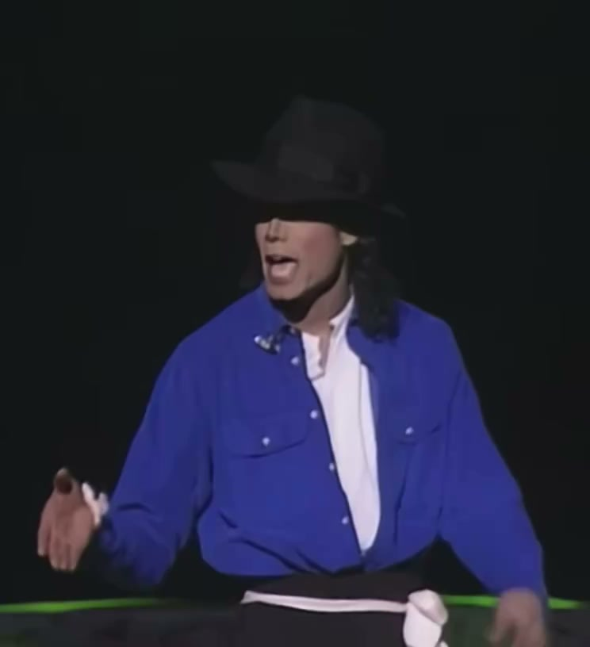
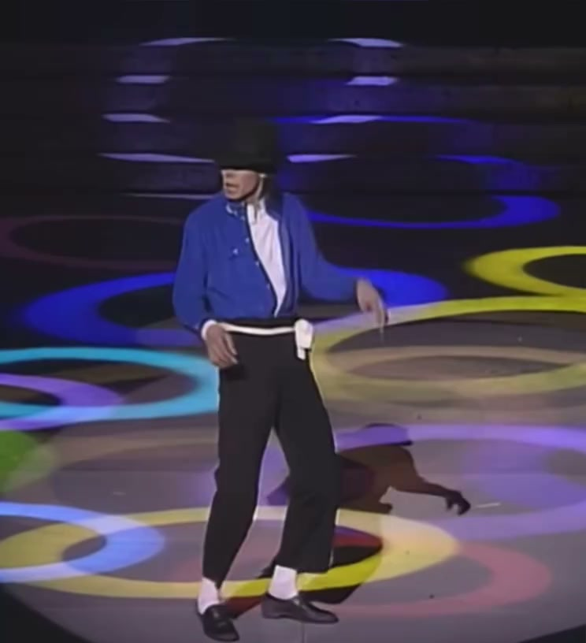
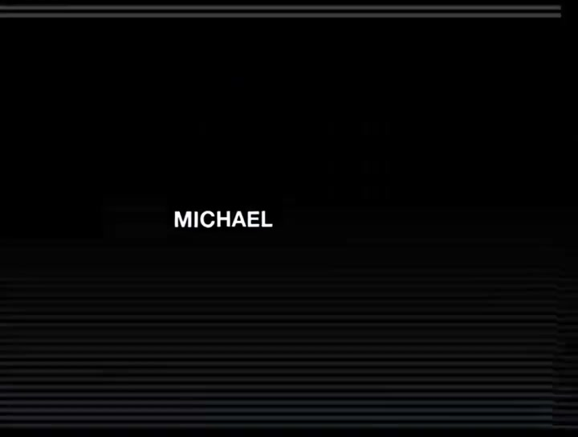
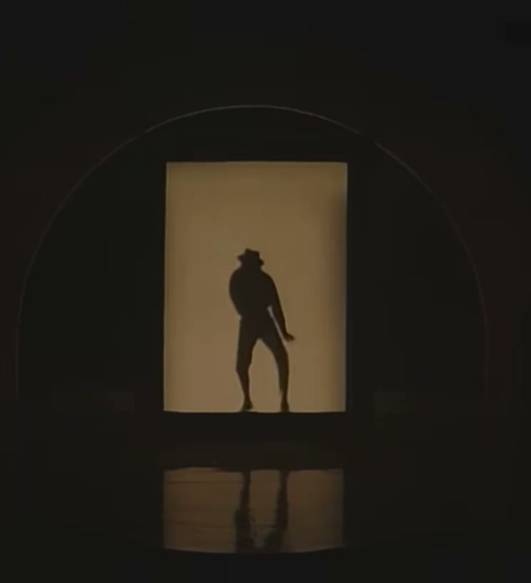
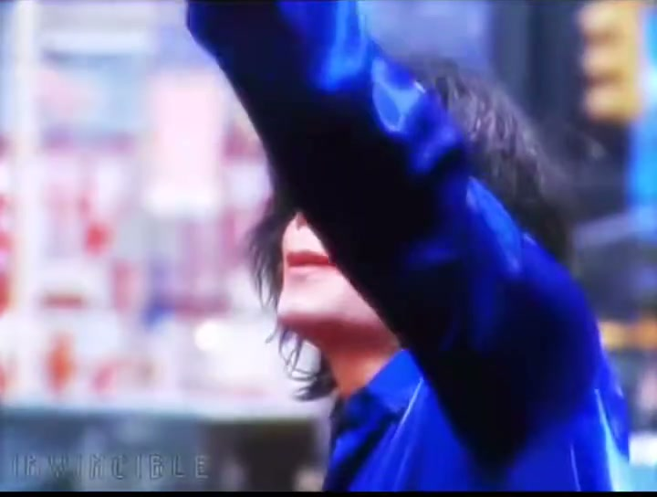
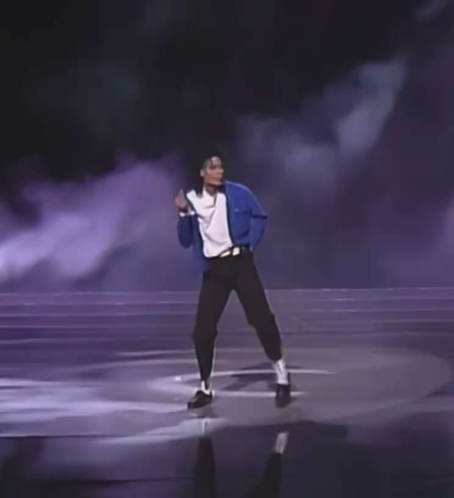
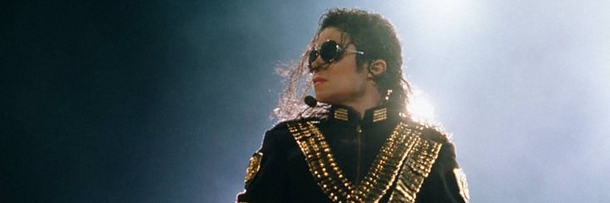

04 · El artista
Michael Jackson
El Rey del Pop transformó la música, la danza y el espectáculo para siempre.

Biografía
Un artista sin precedentes
Michael Joseph Jackson nació el 29 de agosto de 1958 en Gary, Indiana. Siendo niño se convirtió en la voz principal de los Jackson 5 y, en la década de 1970, dio el salto a una carrera en solitario que lo llevaría a la cima de la música popular.
Con Off the Wall (1979) y, sobre todo, Thriller (1982), redefinió lo que un artista pop podía lograr: ventas históricas, videoclips con carácter de cine y coreografías que entraron en la memoria colectiva.
Su obra continuó con Bad, Dangerous, HIStory e Invincible. Falleció el 25 de junio de 2009 en Los Ángeles, mientras preparaba su serie de conciertos This Is It. Su música, su baile y su mensaje siguen vivos en todo el mundo.
Cuatro pilares
Lo que lo hizo único
La música
Voz, ritmo y producción: un oído absoluto para convertir cada canción en un acontecimiento.
La danza
Del moonwalk a la inclinación de 45°, creó un vocabulario corporal que todavía se estudia y se imita.
El cine y el videoclip
Elevó el videoclip a cortometraje con guion, vestuario, coreografía y estreno mundial.
El humanitarismo
We Are the World, Heal the World Foundation y una voz constante a favor de la infancia y la paz.
1983 · Motown 25
El moonwalk

Galería
Momentos en escena









Legado
Un eco que no termina
En escena
Antes de la primera nota
La silueta, la luz y el silencio: así empezaba un espectáculo.

Presencia
Una mirada que llenaba estadios
Gafas oscuras, chaqueta dorada y un público entero esperando.